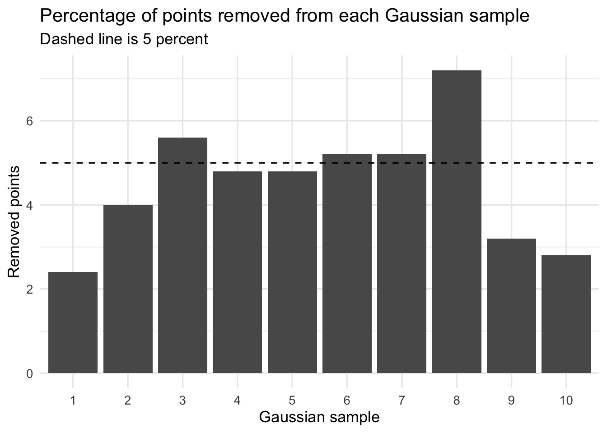
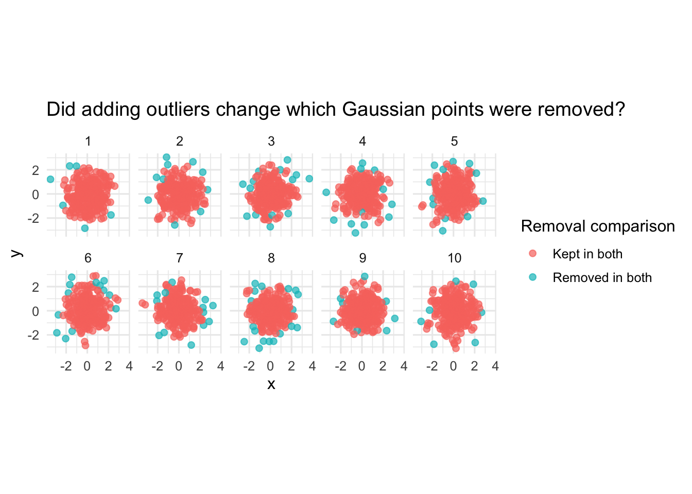
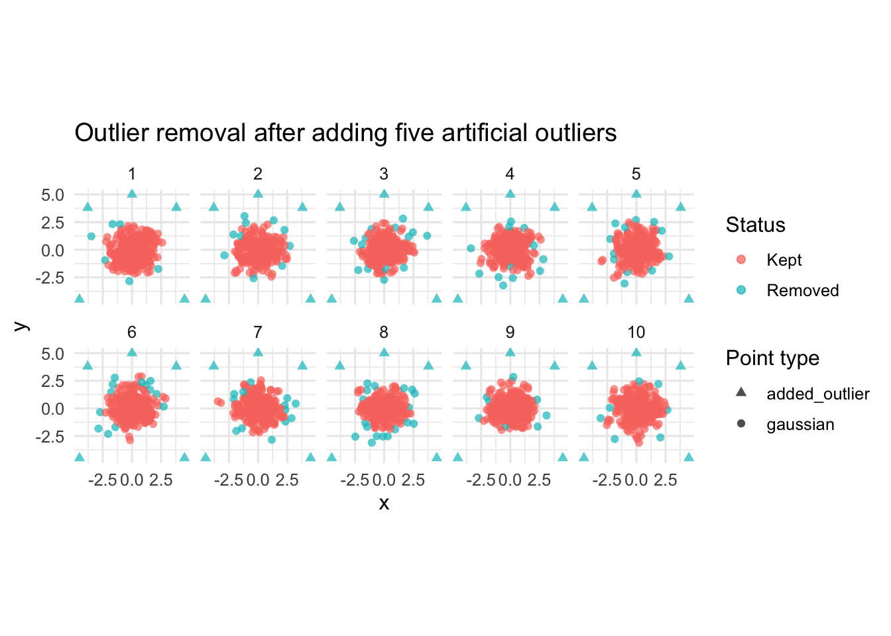
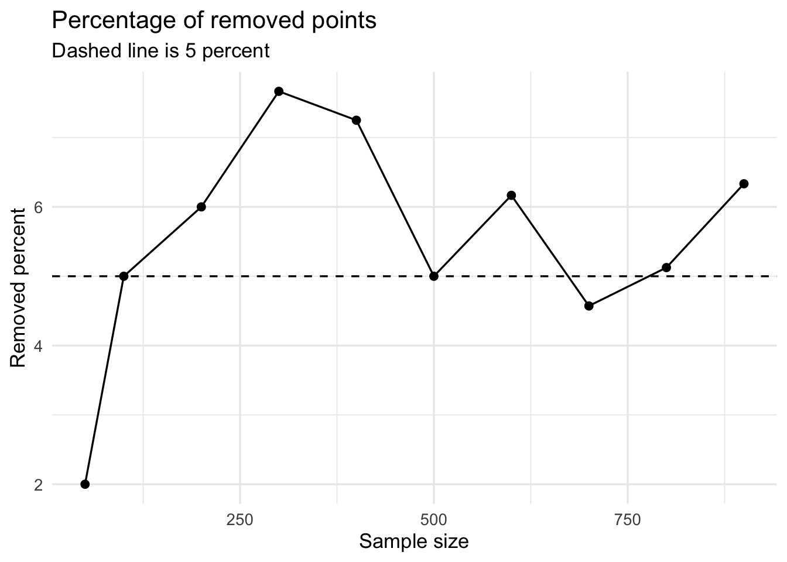
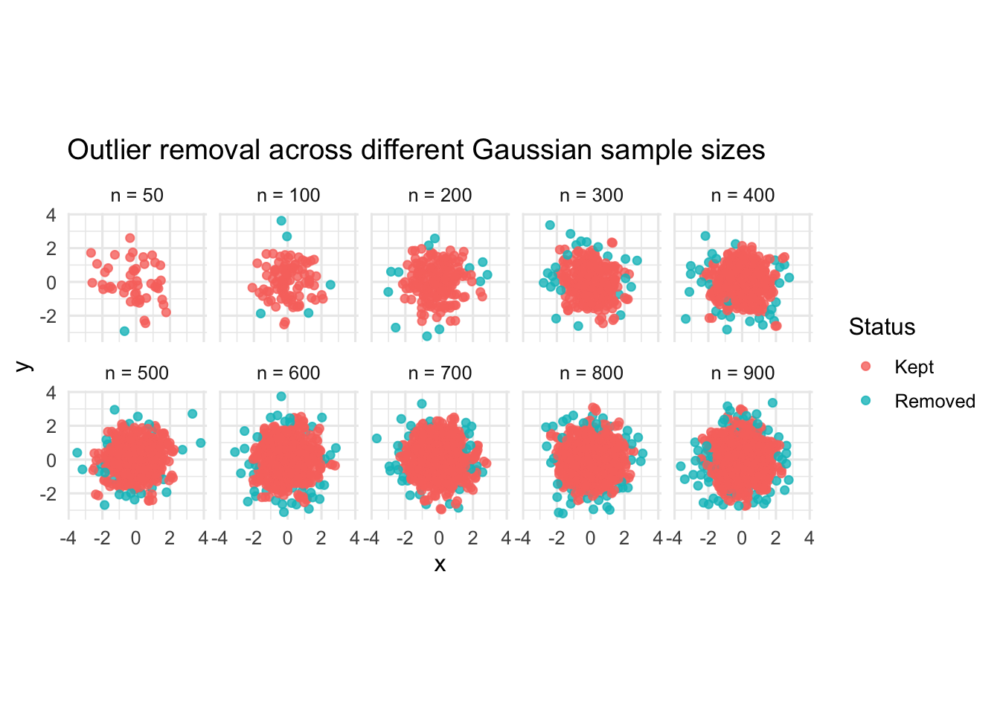

Code
library(tidyverse)
library(alphahull)
library(igraph)
library(plotly)25 May 2026
In the previous post, Testing Scagnostic Rescaling Across Preprocessing Settings, I looked at how different preprocessing settings might affect the scagnostic rescaling formula. One of the preprocessing settings was whether outlier removal was turned on or off.
What surprised me was that setting outlier removal to "yes" had a clear effect. In some cases, the number of changed values went beyond 5 percent. This was unexpected because the test data were generated from bivariate Gaussian noise. I was not expecting Gaussian noise to contain many meaningful outliers, and I was not expecting outlier removal to noticeably affect the rescaling formula.
This raised an important question:
What exactly is being removed by the outlier-removal step in
cassowaryr?
At first, I thought the procedure might be a kind of simple trimming step. However, after looking more closely at the code, the process is iterative. Points are removed, the Delaunay triangulation and MST are recomputed, and the procedure repeats until no more outliers are detected.
This post explores that behaviour directly.
A bivariate Gaussian distribution is a smooth, continuous distribution over two variables. In the simplest case, the data form an elliptical cloud around a mean. Most points are concentrated near the centre, with fewer points appearing farther away in the tails.
For a standard normal variable, most observations fall roughly within three standard deviations of the mean. However, Gaussian distributions are not bounded. This means that values outside the central region can still occur naturally.
So my expectation was not that Gaussian data can never produce extreme points. Rather, my expectation was that if the data are just random Gaussian noise, then outlier removal should not have a strong or systematic effect on the scagnostic rescaling formula.
The results suggested otherwise. That motivated this exploration.
The outlier-removal function in cassowaryr returns a final delvor object after the iterative removal process has stopped.
outlier_removal <- function(xy){
# remove outliers iteratively (based on "Scagnostics Distributions" paper)
repeat {
# Get del, MST and weights
del <- alphahull::delvor(xy)
weights <- gen_edge_lengths(del)
mst <- gen_mst(del, weights)
mst_weights <- igraph::E(mst)$weight
# get outliers
outliers <- outlying_identify(mst, mst_weights)
# if no outliers, just return current del
if(is.null(outliers)){
return(del)
} else{
# otherwise we remove outliers and recompute
xy <- xy[-outliers,]
}
}
}This is not one-step trimming. The repeat loop has been used so that after points are removed, the graph is recomputed and outlier detection is applied again.
However, this function does not directly return the removed points. It only returns the final Delaunay triangulation. Therefore, to identify the removed observations without changing the function, I compare the original coordinates with the coordinates remaining in final_del$x.
Because the original function returns only the final del object, I use the coordinates stored in final_del$x to identify which original observations were kept.
make_key <- function(x, y) {
paste(signif(x, 17), signif(y, 17), sep = "__")
}
find_removed_points <- function(xy_tbl) {
xy_mat <- xy_tbl |>
dplyr::select(x, y) |>
as.matrix()
final_del <- cassowaryr:::outlier_removal(xy_mat)
kept_tbl <- final_del$x |>
as_tibble(.name_repair = "minimal") |>
set_names(c("x", "y")) |>
mutate(key = make_key(x, y))
xy_tbl |>
mutate(
key = make_key(x, y),
status = if_else(key %in% kept_tbl$key, "Kept", "Removed")
) |>
dplyr::select(-key)
}Here I generate one bivariate Gaussian dataset. I do not add artificial outliers. The aim is to test whether the outlier-removal step removes points from ordinary Gaussian noise.
<ggplot2::labels> List of 3
$ x : chr "x"
$ y : chr "y"
$ colour: chr "Status"The plot shows which points were kept and which points were removed by the outlier-removal procedure. The removed points are not manually inserted outliers, they are points generated naturally from the Gaussian distribution.
Next, I repeat the same process for 10 independently generated bivariate Gaussian datasets. Again, I do not add artificial outliers.
# A tibble: 20 × 3
sample_id status n
<int> <chr> <int>
1 1 Kept 244
2 1 Removed 6
3 2 Kept 240
4 2 Removed 10
5 3 Kept 236
6 3 Removed 14
7 4 Kept 238
8 4 Removed 12
9 5 Kept 238
10 5 Removed 12
11 6 Kept 237
12 6 Removed 13
13 7 Kept 237
14 7 Removed 13
15 8 Kept 232
16 8 Removed 18
17 9 Kept 242
18 9 Removed 8
19 10 Kept 243
20 10 Removed 7p2 <- ggplot(checked_samples, aes(x = x, y = y, colour = status)) +
geom_point(size = 1.8, alpha = 0.6) +
coord_equal() +
facet_wrap(~ sample_id, ncol = 5) +
theme_minimal(base_size = 12) +
theme(aspect.ratio = 1)
labs(
title = "Outlier removal across 10 bivariate Gaussian samples",
x = "x",
y = "y",
colour = "Status"
)<ggplot2::labels> List of 4
$ x : chr "x"
$ y : chr "y"
$ colour: chr "Status"
$ title : chr "Outlier removal across 10 bivariate Gaussian samples"The earlier rescaling experiment suggested that outlier removal could affect more than 5 percent of values in some settings. Here I calculate the percentage of points removed from each Gaussian sample.
# A tibble: 10 × 4
sample_id total_points removed_points removed_percent
<int> <int> <int> <dbl>
1 1 250 6 2.4
2 2 250 10 4
3 3 250 14 5.6
4 4 250 12 4.8
5 5 250 12 4.8
6 6 250 13 5.2
7 7 250 13 5.2
8 8 250 18 7.2
9 9 250 8 3.2
10 10 250 7 2.8ggplot(removal_rate, aes(x = factor(sample_id), y = removed_percent)) +
geom_col() +
geom_hline(yintercept = 5, linetype = "dashed") +
theme_minimal(base_size = 13) +
labs(
title = "Percentage of points removed from each Gaussian sample",
subtitle = "Dashed line is 5 percent",
x = "Gaussian sample",
y = "Removed points"
)
The previous section showed what happens when outlier removal is applied to bivariate Gaussian data with no artificial outliers added.
Now I want to test a more specific question:
If I generate Gaussian data, then add artificial outliers to the same data, does the outlier-removal procedure remove exactly the same original Gaussian points as before, plus the new outliers? Or does adding outliers change which original Gaussian points are removed?
This matters because the outlier-removal function is iterative. The MST and the threshold are recomputed after removals. Therefore, adding new outlying points could change the geometry of the graph and affect the removal of points that were already present in the original Gaussian sample.
Now I add artificial outliers to the same 10 Gaussian datasets. The Gaussian points are unchanged. This means any difference in which Gaussian points are removed must be caused by the presence of the added outliers.
I use a stepwise design:
clean: no added outliersplus_1: one added outlierplus_3: three added outliersplus_5: five added outliersoutlier_bank <- tibble(
outlier_number = 1:5,
x = c(3.8, -3.8, 4.5, -4.5, 0),
y = c(3.8, 3.8, -4.5, -4.5, 5.0)
)
scenario_info <- tibble(
outlier_level = c("clean", "plus_1", "plus_3", "plus_5"),
n_added = c(0, 1, 3, 5)
)
create_scenario_data <- function(sample_id_value, outlier_level, n_added) {
base_data <- gaussian_samples |>
filter(sample_id == sample_id_value) |>
mutate(
outlier_level = outlier_level,
point_type = "gaussian"
)
if (n_added == 0) {
return(base_data)
}
added_outliers <- outlier_bank |>
slice_head(n = n_added) |>
transmute(
x = x,
y = y,
sample_id = sample_id_value,
id = n + row_number(),
point_type = "added_outlier",
outlier_level = outlier_level
)
bind_rows(base_data, added_outliers)
}
experiment_data <- tidyr::expand_grid(
sample_id = unique(gaussian_samples$sample_id),
scenario_info
) |>
pmap_dfr(
\(sample_id, outlier_level, n_added) {
create_scenario_data(sample_id, outlier_level, n_added)
}
) |>
mutate(
outlier_level = factor(
outlier_level,
levels = c("clean", "plus_1", "plus_3", "plus_5")
)
)experiment_checked <- experiment_data |>
group_by(sample_id, outlier_level) |>
group_modify(~ find_removed_points(.x)) |>
ungroup()
removal_summary <- experiment_checked |>
group_by(sample_id, outlier_level) |>
summarise(
total_points = n(),
removed_total = sum(status == "Removed"),
removed_gaussian = sum(status == "Removed" & point_type == "gaussian"),
removed_added_outliers = sum(status == "Removed" & point_type == "added_outlier"),
removed_percent = 100 * removed_total / total_points,
.groups = "drop"
)
removal_summary# A tibble: 40 × 7
sample_id outlier_level total_points removed_total removed_gaussian
<int> <fct> <int> <int> <int>
1 1 clean 250 6 6
2 1 plus_1 251 7 6
3 1 plus_3 253 9 6
4 1 plus_5 255 11 6
5 2 clean 250 10 10
6 2 plus_1 251 11 10
7 2 plus_3 253 13 10
8 2 plus_5 255 15 10
9 3 clean 250 14 14
10 3 plus_1 251 15 14
# ℹ 30 more rows
# ℹ 2 more variables: removed_added_outliers <int>, removed_percent <dbl>Now I compare the clean case with the plus_5 case. This directly answers whether the same original Gaussian points are removed.
gaussian_clean_vs_plus5 <- experiment_checked |>
filter(
point_type == "gaussian",
outlier_level %in% c("clean", "plus_5")
) |>
dplyr::select(sample_id, id, outlier_level, status) |>
pivot_wider(
names_from = outlier_level,
values_from = status,
names_prefix = "status_"
) |>
mutate(
removal_change = case_when(
status_clean == "Removed" & status_plus_5 == "Removed" ~ "Removed in both",
status_clean == "Removed" & status_plus_5 == "Kept" ~ "Removed only when clean",
status_clean == "Kept" & status_plus_5 == "Removed" ~ "Removed only after added outliers",
TRUE ~ "Kept in both"
)
)
gaussian_clean_vs_plus5 |>
count(sample_id, removal_change)# A tibble: 20 × 3
sample_id removal_change n
<int> <chr> <int>
1 1 Kept in both 244
2 1 Removed in both 6
3 2 Kept in both 240
4 2 Removed in both 10
5 3 Kept in both 236
6 3 Removed in both 14
7 4 Kept in both 238
8 4 Removed in both 12
9 5 Kept in both 238
10 5 Removed in both 12
11 6 Kept in both 237
12 6 Removed in both 13
13 7 Kept in both 237
14 7 Removed in both 13
15 8 Kept in both 232
16 8 Removed in both 18
17 9 Kept in both 242
18 9 Removed in both 8
19 10 Kept in both 243
20 10 Removed in both 7comparison_plot_data <- gaussian_samples |>
left_join(
gaussian_clean_vs_plus5,
by = c("sample_id", "id")
)
ggplot(comparison_plot_data, aes(x = x, y = y, colour = removal_change)) +
geom_point(size = 1.9, alpha = 0.7) +
coord_equal() +
facet_wrap(~ sample_id, ncol = 5) +
theme_minimal(base_size = 12) +
theme(aspect.ratio = 1) +
labs(
title = "Did adding outliers change which Gaussian points were removed?",
x = "x",
y = "y",
colour = "Removal comparison"
)
ggplot(
experiment_checked |> filter(outlier_level == "plus_5"),
aes(x = x, y = y, colour = status, shape = point_type)
) +
geom_point(size = 1.8, alpha = 0.7) +
scale_shape_manual(
values = c(
"gaussian" = 16,
"added_outlier" = 17
)
) +
coord_equal() +
facet_wrap(~ sample_id, ncol = 5) +
theme_minimal(base_size = 12) +
theme(aspect.ratio = 1) +
labs(
title = "Outlier removal after adding five artificial outliers",
x = "x",
y = "y",
colour = "Status",
shape = "Point type"
)
This experiment shows that adding artificial outliers did not change which original Gaussian points were removed.
The same Gaussian tail points were removed in the clean data and in the contaminated data. When artificial outliers were added, the total number of removed points increased only by the number of added outliers. For example, if 6 points were removed from the clean Gaussian sample and 3 artificial outliers were added, then the total number of removed points became 9.
So far, I have looked at one Gaussian dataset and then compared clean Gaussian data with contaminated Gaussian data after adding artificial outliers.
Another useful question is whether the outlier-removal behaviour changes with sample size.
In a Gaussian distribution, larger samples are more likely to contain more extreme tail observations. However, larger samples also make the point cloud denser. Therefore, it is not obvious whether outlier removal should increase, decrease, or remain stable as sample size increases.
Here I generate independent bivariate Gaussian samples with different sample sizes \((50, 100, 200, 300, 400, 500, 600, 700, 800, 900)\).
For each sample size, I generate one dataset where both x and y are independent standard normal variables.
set.seed(935)
generate_gaussian_by_size <- function(sample_size) {
tibble(
x = rnorm(sample_size, mean = 0, sd = 1),
y = rnorm(sample_size, mean = 0, sd = 1)
) |>
mutate(
sample_size = sample_size,
id = row_number(),
point_type = "gaussian"
)
}
gaussian_by_size <- map_dfr(
sample_sizes,
generate_gaussian_by_size
)I use the same comparison approach as before. The original outlier_removal() function is not changed. I compare the original points with the points remaining in the final Delaunay object.
# A tibble: 10 × 5
sample_size total_points removed_points kept_points removed_percent
<dbl> <int> <int> <int> <dbl>
1 50 50 1 49 2
2 100 100 5 95 5
3 200 200 12 188 6
4 300 300 23 277 7.67
5 400 400 29 371 7.25
6 500 500 25 475 5
7 600 600 37 563 6.17
8 700 700 32 668 4.57
9 800 800 41 759 5.12
10 900 900 57 843 6.33The count of removed points may increase simply because there are more points. Therefore, it is also useful to look at the percentage removed.
ggplot(removed_by_size, aes(x = sample_size, y = removed_percent)) +
geom_line() +
geom_point(size = 2) +
geom_hline(yintercept = 5, linetype = "dashed") +
theme_minimal(base_size = 13) +
labs(
title = "Percentage of removed points",
subtitle = "Dashed line is 5 percent",
x = "Sample size",
y = "Removed percent"
)
checked_by_size <- checked_by_size |>
mutate(
sample_size_label = factor(
paste0("n = ", sample_size),
levels = paste0("n = ", c(50, 100, 200, 300, 400, 500, 600, 700, 800, 900))
)
)
ggplot(checked_by_size, aes(x = x, y = y, colour = status)) +
geom_point(size = 1.6, alpha = 0.8) +
coord_equal() +
facet_wrap(~ sample_size_label, ncol = 5) +
theme_minimal(base_size = 12) +
labs(
title = "Outlier removal across different Gaussian sample sizes",
x = "x",
y = "y",
colour = "Status"
)
The number of removed points increases as the sample size increases. For example, only 1 point is removed when n = 50, while 57 points are removed when n = 900. In these results, the removal rate is mostly around 5% to 7%, with some variation across sample sizes.
Overall, the MST-based outlier-removal step removes some natural Gaussian tail observations, especially as sample size increases. This reflects the geometry of the Gaussian point cloud rather than the presence of true outliers.